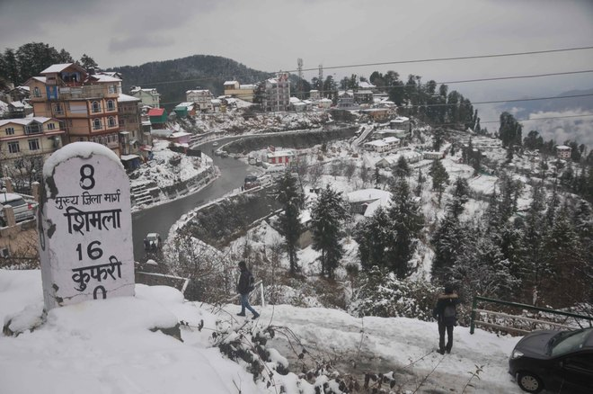
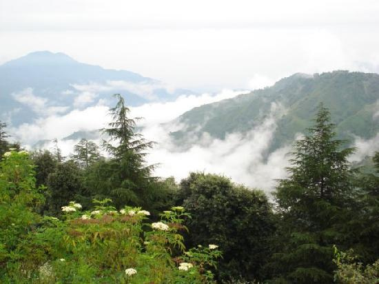
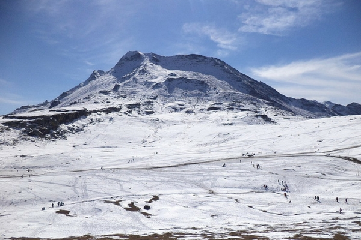

Hill Stations in India
Image1(Kufri):-
Kufri
is a resort hill station in the district of Shimla, India.
It is located 20 km from the state capital Shimla on the National Highway No. 22. On the Kufri Avenue,
the main thoroughfare, boutiques and restaurants mix with Indian-style hotels and souvenir shops are to
look for during a vist.
Kufri with NH-22, Shimla.
The name Kufri is derived from the word kufr meaning "lake" in the local language
Image2(chailhill):-
Chail is a hill station in Himachal Pradesh, India. It is 44 kilometres (27 mi) from Shimla and 45 kilometres
(28 mi) from Solan. It is known for its salubrious beauty and virgin forests. The Chail Palace is well
known for its architecture: the palace was built as summer retreat by the Maharaja of Patiala during the
British Raj, on the land allotted to him by the British for former's assistance in the Anglo-Nepalese War.
Image3(manali):-
Manali is a resort and tourist town nestled in the mountains of the Indian state of Himachal Pradesh near
the northern end of theKullu Valley in the Beas River Valley. It is located in the Kullu district, about
270 km (168 mi) north of the state capital, Shimla, 309 km (192 miles) northeast of Chandigarh, and 544 km
iles) northeast of Delhi, the national capital
Image4(gulmarg):-
Gulmarg (Urdu pronunciation: [gʊlmərɡ]), known as Gulmarag (Kashmiri pronunciation: [ɡulmarɨɡ] ; lit.
'meadow of flowers')in Kashmiri, is a town, a hill station, a popular skiing destination and a
notified area committee in theBaramulla district of Jammu and Kashmir, India. The town is situated
in the Pir Panjal Range in the Western Himalayas and lies within the boundaries of Gulmarg Wildlife
Sanctuary.